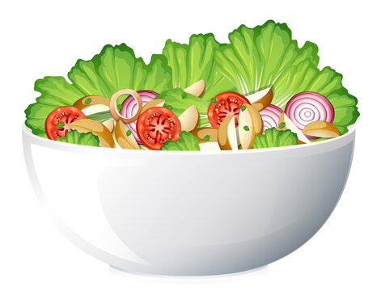

Salad

This La Scala Chopped Salad may be a recent social media sensation,
but did you know that the viral recipe has actually been around for decades?
They’re flavorful, easy to recreate, and are usually made up of wholesome ingredients.
This famous chopped salad has a truly international flavor, with Italian-inspired
ingredients like pecorino romano and mozzarella. The La Scala dressing, also known as
the “Leon dressing,” contains French-style ingredients like dry mustard. It may sound fancy,
but chances are you already have many of the ingredients on hand. Here’s what you’ll need:
Ingredients
- Iceberg Lettuce
- chickpeas
- Italian Salami
- La Scala Dressing
- Pecorino Romano
How to Make It
- Add salad ingredients to a bowl: Add the iceberg lettuce, chickpeas, salami, and Pecorino romano to a large bowl and set aside.
- Add the dressing and toss: Pour the dressing over the salad and toss well to combine.
- Serve: Garnish the salad with additional cheese and serve.
Enjoy!